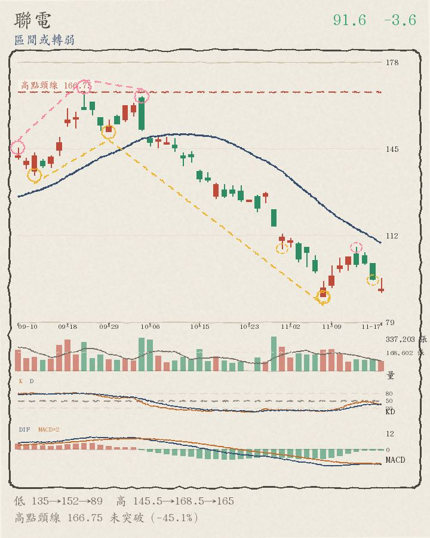
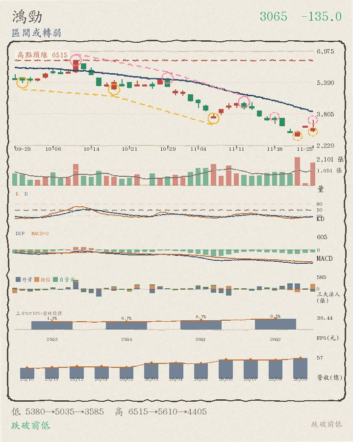
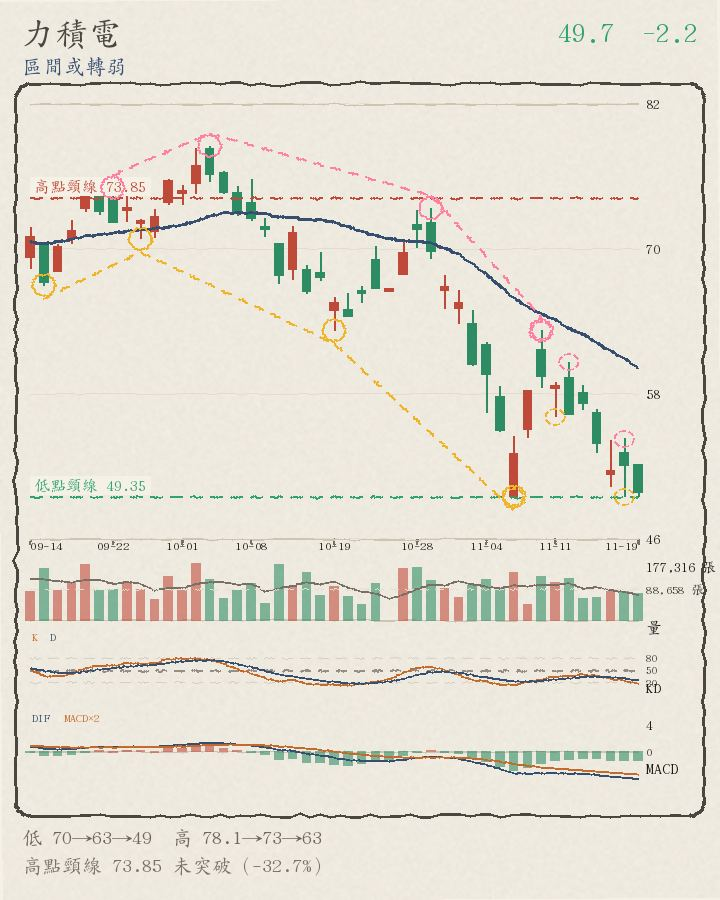
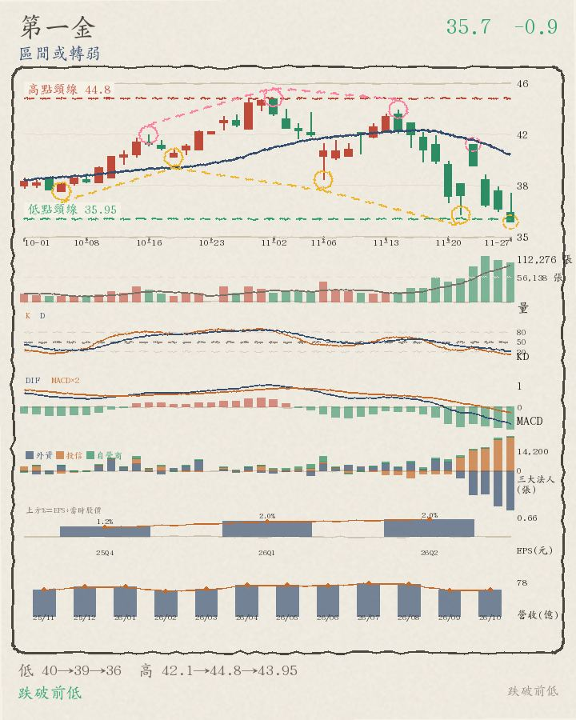
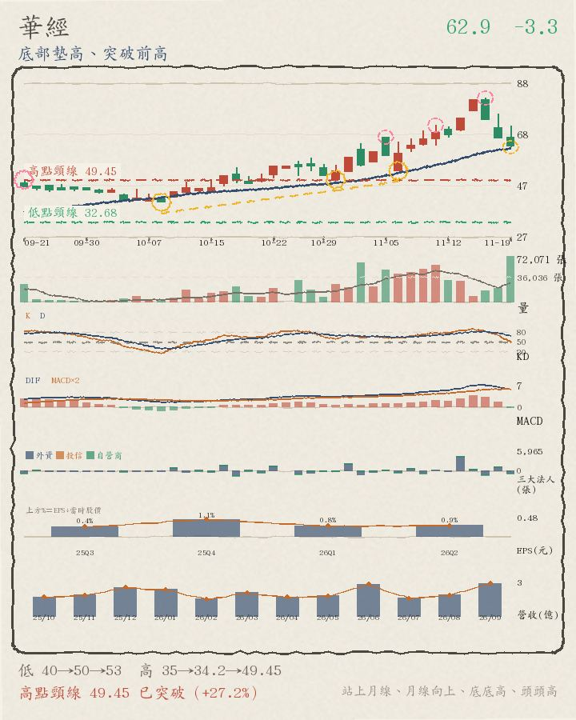
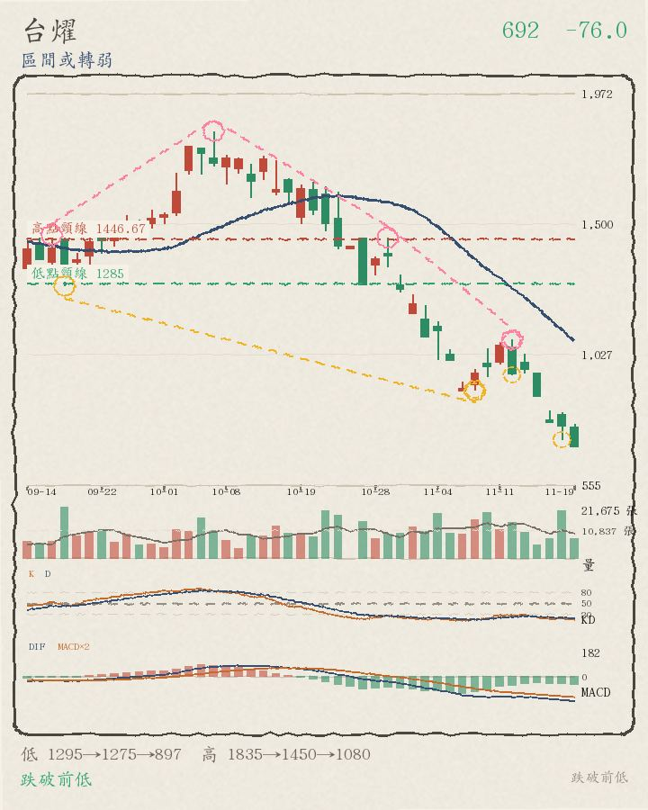
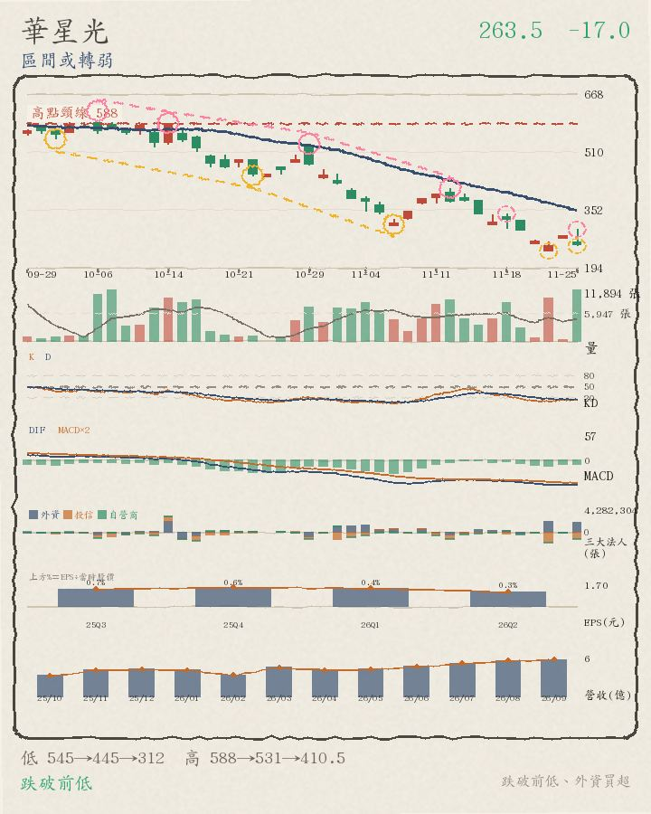

← 回股市觀察
逐檔技術線型分析
→ 看當日逐檔技術線型分析（全檔） 歷次逐檔分析
2026/11/25 · 成交金額上市前 50 名 ＋ 上櫃前 20 名（共 70 檔）· 公開資料整理
38195.43
加權指數 -1,926.92 點（-4.80%）
39 / 1033
上市個股上漲／下跌家數
上漲 3.6% · 下跌 95.1% · 持平 1.3%（共 1086 檔）
66 / 774
上櫃個股上漲／下跌家數
上漲 7.6% · 下跌 89.4% · 持平 3.0%（共 866 檔）
統計範圍：當日成交金額上市前 50 名 ＋ 上櫃前 20 名（共 70 檔，皆為 4 位數代號的個股，不含 ETF／權證）。
兩個市場各自取前 N 名後合併呈現，卡片上標示市場別（上市／上櫃），清單也附市場分布。
條件統計：上市 上升趨勢：底底高 ＋ 頭頭高 1 檔、突破頸線 0 檔、底底高 2 檔、頭頭高 5 檔、站上月線 5 檔、月線向上 2 檔、外資買超 16 檔、量價攻擊（收紅＋大量） 5 檔、跌破前低（線型轉弱） 31 檔；上櫃 上升趨勢：底底高 ＋ 頭頭高 1 檔、突破頸線 1 檔、底底高 1 檔、頭頭高 1 檔、站上月線 1 檔、月線向上 1 檔、外資買超 10 檔、量價攻擊（收紅＋大量） 0 檔、跌破前低（線型轉弱） 12 檔。
五項全滿足（底底高＋頭頭高＋站上月線＋月線向上＋5 日線向上）：上市 無；上櫃 天品。
資料日 2026/11/25。籌碼：上市為證交所三大法人、上櫃為櫃買中心三大法人；上櫃另附融資餘額。
每一檔都附上 K 線圖與線型說明：黃圈是轉折低點、粉圈是轉折高點、藍線是月線。
圖上兩條水平虛線、左側標數值：高點頸線（紅，連到最多「轉折高點」的那條水平線，代表上方壓力帶；收盤站上就算突破）與
低點頸線（綠，連到最多「轉折低點」的那條水平線，代表下方支撐帶；收盤跌破就算跌破）；
兩條線都只看最近 6 個轉折點、容忍同一價位帶 4%，連不到 2 個轉折點就不畫。
卡片的標籤可以點回上方對應清單，清單裡的股名也可以點到該檔。
本頁為公開資料（證交所每日收盤行情與三大法人、櫃買中心每日收盤行情與三大法人、Yahoo 股市日線）的整理與觀察，
不構成投資建議，不報牌、不預測、不下買賣決策。
大盤趨勢快篩（加權指數） 資料日 2026/11/25・來源：證交所公開資料
主狀態：跌破頸線（M 頭成立）
前一交易日對照（11/24）：跌破月線（量比 20 0.46） → 今日跌破頸線（M 頭成立）（量比 20 1.26）
指標、數值、判定（點開看 12 項明細：均線位置／排列、月線方向、頸線、轉折結構、位階、量價…）
加權指數今天跌 1,926.92 點（-4.80%），收 38,195.43、跌破月線 41,517.39；月線還在下彎，MA10 這條短均還沒收復，離高點頸線 47,615.17 還差 19.78%。
- 均線位置：4 條均線站上 1 條；沒站上的是 MA10 39,768.39（收盤比它低 3.96%）、MA20 41,517.39（收盤比它低 8.00%）、MA60 45,367.01（收盤比它低 15.81%）
- 月線方向：月線 MA20 現在 41,517.39，比 5 個交易日前低 2,138.20 點 → 下彎
- 量能：集中市場成交 12,297.6 億，比 5 日均量大不少（1.32 倍）、比 20 日均量大不少（1.26 倍）
- 關鍵價位：高點頸線 47,615.17，還差 19.78%；低點頸線 38,610.95已跌破
- 大小型股：加權 -4.80%、櫃買 -5.89%，兩邊同向

圖說：加權指數日 K（與個股圖相同標記）：黃圈＝轉折低點、粉圈＝轉折高點、虛線小圈＝還沒確認的轉折、藍線＝月線 MA20、水平虛線＝高點／低點頸線。最後一根是資料日當天。
本區塊為公開資料的技術面觀察，不構成投資建議，
不報牌、不預測、不下買賣決策。成交金額為集中市場總成交金額（含 ETF／權證），
與頁首摘要的「上市個股成交金額」口徑不同。標籤是統計，不是評分、也不是推薦。
上市 vs 上櫃（同期快篩）
加權 -4.80% vs 櫃買 -5.89%（同向） → 同向
（兩個市場分開寫，不合併成一個數字；櫃買為 TPEX 公開資料）
櫃買歷史：TPEX 逐日回補 130 根；來源：櫃買中心 www/zh-tw/indexInfo/sectinx（逐日，官方；OpenAPI tpex_index 只回當月）
（TPEX OpenAPI 只回當月，故逐日回補；歷史不足就不算該條均線並標「資料不足」，不用錯數字）
近 20 個交易日大盤狀態回溯（最新在上）（點開看逐日主狀態／量比／量價象限）
用同一支程式回算最近 20 個交易日（主狀態 S1~S8 與量比 20 皆為當日收盤當時的判定，
不是事後調整）；量比 20 未公布的日子寫「—」。
好條件最多的（前 10）
不好條件最多的（前 10）
本期市場狀態：空頭（等權指數在 60 日均線之下）（空頭期間：趨勢類條件反向（回測後 20 日差距 −0.9% ~ −2.1%），本排行改用超跌反轉類（跌破前低／在月線之下／月線下彎））
好條件（4 項）：跌破前低、在月線之下、月線下彎、外資買超。
不好條件（5 項）：站上月線、月線向上、突破頸線、量價攻擊（收紅＋大量）、外資賣超。
兩邊都是同一組資料（日線結構＋當日收盤量價籌碼）算出來的「符合項目數」，只是方向相反；
條件數不是評分、也不是推薦，不構成投資建議。
上升趨勢：底底高 ＋ 頭頭高（2 上市 1／上櫃 1）
跌破前低（線型轉弱）（43 上市 31／上櫃 12）
逐檔分析（70 檔）
區間或轉弱 成交金額 1794.88 億・全榜第 1 名（上市第 1 名）
好條件 2/4：在月線之下、月線下彎
不好條件 1/5：外資賣超

今天帶量收黑、跌破月線 2236，離高點頸線 2435 還差 11.7%，轉折還沒走出明顯方向。
- 月線位置：收盤 2150 在月線 2236 之下；5 日線 2102 也在月線之下（短均在下）；月線走平或向下、5 日線走平或向下
- 量能：成交量是 20 日均量的 2.04 倍，比 20 日均量大不少；收黑卻量增，量價背離
- 關鍵價位：高點頸線 2435 還沒突破，差 11.7%；最近轉折高點 2395（低於 10.2%）；最近轉折低點 1970（高於 9.1%）
- 轉折結構：低點 2375、2020、1970 與高點 2435、2395、2395 都沒有明顯遞增，屬於區間震盪或轉弱；還沒確認的轉折低點 11-23 1970、11-25 2020；還沒確認的轉折高點 11-24 2230（圖上虛線小圈）
區間或轉弱 成交金額 882.32 億・全榜第 2 名（上市第 2 名）
好條件 2/4：在月線之下、月線下彎
不好條件 1/5：外資賣超

今天帶量收黑、跌破月線 3785.5，離高點頸線 5165 還差 29.4%，轉折還沒走出明顯方向。
- 月線位置：收盤 3645 在月線 3785.5 之下；5 日線 3690 也在月線之下（短均在下）；月線走平或向下、5 日線走平或向下
- 量能：成交量是 20 日均量的 1.86 倍，比 20 日均量大不少；收黑卻量增，量價背離
- 關鍵價位：高點頸線 5165 還沒突破，差 29.4%；最近轉折高點 4235（低於 13.9%）；最近轉折低點 3350（高於 8.8%）
- 轉折結構：低點 4875、3115、3350 與高點 5165、4245、4235 都沒有明顯遞增，屬於區間震盪或轉弱；還沒確認的轉折低點 11-23 3350、11-25 3645；還沒確認的轉折高點 11-18 4075、11-24 4050（圖上虛線小圈）
區間或轉弱 成交金額 419.23 億・全榜第 3 名（上市第 3 名）
好條件 2/4：在月線之下、月線下彎
不好條件 1/5：外資賣超

今天帶量收黑、跌破月線 1166，離高點頸線 2115 還差 50.1%，轉折還沒走出明顯方向。
- 月線位置：收盤 1055 在月線 1166 之下；5 日線 1006 也在月線之下（短均在下）；月線走平或向下、5 日線走平或向下
- 量能：成交量是 20 日均量的 2.11 倍，比 20 日均量大不少；收黑卻量增，量價背離
- 關鍵價位：高點頸線 2115 還沒突破，差 50.1%；最近轉折高點 1335（低於 21.0%）；最近轉折低點 1020（高於 3.4%）
- 轉折結構：低點 1560、1810、1020 與高點 1965、2115、1335 都沒有明顯遞增，屬於區間震盪或轉弱；還沒確認的轉折低點 11-23 864、11-25 989；還沒確認的轉折高點 11-19 1115、11-25 1115（圖上虛線小圈）
區間或轉弱 成交金額 298.25 億・全榜第 4 名（上市第 4 名）
好條件 2/4：在月線之下、月線下彎
不好條件 1/5：外資賣超

今天帶量收黑、跌破月線 266.625，離高點頸線 325.5 還差 30.4%，轉折還沒走出明顯方向。
- 月線位置：收盤 226.5 在月線 266.625 之下；5 日線 227.3 也在月線之下（短均在下）；月線走平或向下、5 日線走平或向下
- 量能：成交量是 20 日均量的 1.36 倍，比 20 日均量大不少；收黑卻量增，量價背離
- 關鍵價位：高點頸線 325.5 還沒突破，差 30.4%；最近轉折高點 325.5（低於 30.4%）；最近轉折低點 224.5（高於 0.9%）
- 轉折結構：低點 223、295、224.5 與高點 325.5、325、325.5 都沒有明顯遞增，屬於區間震盪或轉弱；還沒確認的轉折低點 11-23 196、11-25 224.5；還沒確認的轉折高點 11-18 280、11-25 250.5（圖上虛線小圈）
區間或轉弱 成交金額 297.69 億・全榜第 5 名（上市第 5 名）
好條件 3/4：跌破前低、在月線之下、月線下彎
不好條件 1/5：外資賣超

今天帶量收黑、跌破月線 3954.25，跌破前一個轉折低點（高點頸線 5485 還在收盤上方），轉折還沒走出明顯方向。
- 月線位置：收盤 3355 在月線 3954.25 之下；5 日線 3154 也在月線之下（短均在下）；月線走平或向下、5 日線走平或向下
- 量能：成交量是 20 日均量的 2.10 倍，比 20 日均量大不少；收黑卻量增，量價背離
- 關鍵價位：高點頸線 5485 還沒突破、還在收盤上方 38.8%；最近轉折高點 4565（低於 26.5%）；最近轉折低點 3690（低於 9.1%）
- 轉折結構：低點 4855、4930、3690 與高點 5485、5295、4565 都沒有明顯遞增，屬於區間震盪或轉弱；還沒確認的轉折低點 11-23 2560、11-25 3100；還沒確認的轉折高點 11-25 3590（圖上虛線小圈）
區間或轉弱 成交金額 276.57 億・全榜第 6 名（上市第 6 名）
好條件 4/4：跌破前低、在月線之下、月線下彎、外資買超
不好條件 0/5：無

今天帶量收黑、跌破月線 763.2，跌破前一個轉折低點（高點頸線 1420 還在收盤上方），轉折還沒走出明顯方向。
- 月線位置：收盤 585 在月線 763.2 之下；5 日線 577.8 也在月線之下（短均在下）；月線走平或向下、5 日線走平或向下
- 量能：成交量是 20 日均量的 1.76 倍，比 20 日均量大不少；收黑卻量增，量價背離
- 關鍵價位：高點頸線 1420 還沒突破、還在收盤上方 58.8%；最近轉折高點 894（低於 34.6%）；最近轉折低點 720（低於 18.8%）
- 轉折結構：低點 932、1040、720 與高點 1420、1180、894 都沒有明顯遞增，屬於區間震盪或轉弱；還沒確認的轉折低點 11-23 484.5、11-25 555；還沒確認的轉折高點 11-18 691、11-25 640（圖上虛線小圈）
區間或轉弱 成交金額 249.72 億・全榜第 7 名（上市第 7 名）
好條件 4/4：跌破前低、在月線之下、月線下彎、外資買超
不好條件 0/5：無

今天帶量收黑、跌破月線 677.775，跌破前一個轉折低點（高點頸線 1150 還在收盤上方），轉折還沒走出明顯方向。
- 月線位置：收盤 495 在月線 677.775 之下；5 日線 493.7 也在月線之下（短均在下）；月線走平或向下、5 日線走平或向下
- 量能：成交量是 20 日均量的 2.57 倍，比 20 日均量大不少；收黑卻量增，量價背離
- 關鍵價位：高點頸線 1150 還沒突破、還在收盤上方 57.0%；最近轉折高點 1065（低於 53.5%）；最近轉折低點 666（低於 25.7%）
- 轉折結構：低點 941、666、666 與高點 835、1150、1065 都沒有明顯遞增，屬於區間震盪或轉弱；還沒確認的轉折低點 11-23 423、11-25 463；還沒確認的轉折高點 11-18 596、11-25 549（圖上虛線小圈）
區間或轉弱 成交金額 243.31 億・全榜第 8 名（上市第 8 名）
好條件 2/4：在月線之下、月線下彎
不好條件 2/5：量價攻擊（收紅＋大量）、外資賣超

今天帶量收紅、跌破月線 921.45，離高點頸線 1295 還差 30.1%，轉折還沒走出明顯方向。
- 月線位置：收盤 905 在月線 921.45 之下；5 日線 809.6 也在月線之下（短均在下）；月線走平或向下、5 日線走平或向下
- 量能：成交量是 20 日均量的 2.89 倍，比 20 日均量大不少；收紅又量增，量價配合
- 關鍵價位：高點頸線 1295 還沒突破，差 30.1%；最近轉折高點 1085（低於 16.6%）；最近轉折低點 782（高於 15.7%）
- 轉折結構：低點 950、1120、782 與高點 1295、1190、1085 都沒有明顯遞增，屬於區間震盪或轉弱；還沒確認的轉折低點 11-23 657、11-25 827；還沒確認的轉折高點 11-18 906、11-25 921（圖上虛線小圈）
區間或轉弱 成交金額 225.64 億・全榜第 9 名（上市第 9 名）
好條件 3/4：在月線之下、月線下彎、外資買超
不好條件 0/5：無

今天帶量收黑、跌破月線 66.07，離高點頸線 89.5 還差 33.1%，轉折還沒走出明顯方向。
- 月線位置：收盤 59.9 在月線 66.07 之下；5 日線 58.7 也在月線之下（短均在下）；月線走平或向下、5 日線走平或向下
- 量能：成交量是 20 日均量的 2.04 倍，比 20 日均量大不少；收黑卻量增，量價背離
- 關鍵價位：高點頸線 89.5 還沒突破，差 33.1%；最近轉折高點 89.5（低於 33.1%）；最近轉折低點 54.1（高於 10.7%）
- 轉折結構：低點 56.6、58.8、54.1 與高點 73.6、70、89.5 都沒有明顯遞增，屬於區間震盪或轉弱；還沒確認的轉折低點 11-23 49.5、11-25 58.2；還沒確認的轉折高點 11-25 69.6（圖上虛線小圈）
區間或轉弱 成交金額 220.12 億・全榜第 10 名（上市第 10 名）
好條件 2/4：在月線之下、月線下彎
不好條件 1/5：外資賣超

今天帶量收黑、跌破月線 2708，離高點頸線 3700 還差 31.2%，轉折還沒走出明顯方向。
- 月線位置：收盤 2545 在月線 2708 之下；5 日線 2432 也在月線之下（短均在下）；月線走平或向下、5 日線走平或向下
- 量能：成交量是 20 日均量的 2.56 倍，比 20 日均量大不少；收黑卻量增，量價背離
- 關鍵價位：高點頸線 3700 還沒突破，差 31.2%；最近轉折高點 3060（低於 16.8%）；最近轉折低點 2310（高於 10.2%）
- 轉折結構：低點 3050、2310、2310 與高點 3700、3450、3060 都沒有明顯遞增，屬於區間震盪或轉弱；還沒確認的轉折低點 11-23 2005、11-25 2360；還沒確認的轉折高點 11-18 2715、11-25 2705（圖上虛線小圈）
區間或轉弱 成交金額 203.36 億・全榜第 12 名（上市第 11 名）
好條件 4/4：跌破前低、在月線之下、月線下彎、外資買超
不好條件 1/5：量價攻擊（收紅＋大量）

今天帶量收紅、跌破月線 4717.75，跌破前一個轉折低點（高點頸線 7460 還在收盤上方），轉折還沒走出明顯方向。
- 月線位置：收盤 4025 在月線 4717.75 之下；5 日線 3855 也在月線之下（短均在下）；月線走平或向下、5 日線走平或向下
- 量能：成交量是 20 日均量的 2.17 倍，比 20 日均量大不少；收紅又量增，量價配合
- 關鍵價位：高點頸線 7460 還沒突破、還在收盤上方 46.0%；最近轉折高點 5560（低於 27.6%）；最近轉折低點 4075（低於 1.2%）
- 轉折結構：低點 6355、5970、4075 與高點 7460、6370、5560 都沒有明顯遞增，屬於區間震盪或轉弱；還沒確認的轉折低點 11-23 3400、11-25 3790；還沒確認的轉折高點 11-18 4820、11-25 4280（圖上虛線小圈）
區間或轉弱 成交金額 197.48 億・全榜第 13 名（上市第 12 名）
好條件 3/4：跌破前低、在月線之下、月線下彎
不好條件 1/5：外資賣超

今天帶量收黑、跌破月線 231.05，跌破前一個轉折低點（高點頸線 266.5 還在收盤上方），轉折還沒走出明顯方向。
- 月線位置：收盤 206.5 在月線 231.05 之下；5 日線 213.9 也在月線之下（短均在下）；月線走平或向下、5 日線走平或向下
- 量能：成交量是 20 日均量的 1.90 倍，比 20 日均量大不少；收黑卻量增，量價背離
- 關鍵價位：高點頸線 266.5 還沒突破、還在收盤上方 22.5%；最近轉折高點 247.5（低於 16.6%）；最近轉折低點 212.5（低於 2.8%）
- 轉折結構：低點 247、237、212.5 與高點 266.5、253.5、247.5 都沒有明顯遞增，屬於區間震盪或轉弱；還沒確認的轉折低點 11-23 205、11-25 204；還沒確認的轉折高點 11-19 225.5、11-24 226.5（圖上虛線小圈）
世芯-KY 3661 上市
3605 -310.0
區間或轉弱 成交金額 187.82 億・全榜第 14 名（上市第 13 名）
好條件 1/4：月線下彎
不好條件 2/5：站上月線、外資賣超

今天帶量收黑、站上月線 3480.5，離高點頸線 4085 還差 11.8%，轉折還沒走出明顯方向。
- 月線位置：收盤 3605 在月線 3480.5 之上；5 日線 3584 也在月線之上（短均在上）；月線走平或向下、5 日線走平或向下
- 量能：成交量是 20 日均量的 1.72 倍，比 20 日均量大不少；收黑卻量增，量價背離
- 關鍵價位：高點頸線 4085 還沒突破，差 11.8%；最近轉折高點 4085（低於 11.8%）；最近轉折低點 2665（高於 35.3%）
- 轉折結構：低點 3585、3260、2665 與高點 3835、3825、4085 都沒有明顯遞增，屬於區間震盪或轉弱；還沒確認的轉折低點 11-23 3210、11-25 3530；還沒確認的轉折高點 11-19 4020、11-25 3970（圖上虛線小圈）
剛突破前高 成交金額 184.34 億・全榜第 15 名（上市第 14 名）
好條件 1/4：月線下彎
不好條件 3/5：站上月線、量價攻擊（收紅＋大量）、外資賣超

今天帶量收紅、站上月線 1513，離高點頸線 2685 還差 39.3%，高點還在墊高（但底部沒同步墊高）。
- 月線位置：收盤 1630 在月線 1513 之上；5 日線 1474 也在月線之下（短均在下）；月線走平或向下、5 日線走平或向下
- 量能：成交量是 20 日均量的 3.16 倍，比 20 日均量大不少；收紅又量增，量價配合
- 關鍵價位：高點頸線 2685 還沒突破，差 39.3%；最近轉折高點 1630（高於 0.0%）；最近轉折低點 1295（高於 25.9%）
- 轉折結構：高點 2685、2080、1630 墊高 4.9%（頭頭高），但低點 1930、1810、1295 沒有同步墊高；還沒確認的轉折低點 11-23 1240、11-25 1540；還沒確認的轉折高點 11-19 1590、11-25 1710（圖上虛線小圈）
區間或轉弱 成交金額 184.33 億・全榜第 16 名（上市第 15 名）
好條件 3/4：跌破前低、在月線之下、月線下彎
不好條件 1/5：外資賣超

今天帶量收黑、跌破月線 570.65，跌破前一個轉折低點（高點頸線 709 還在收盤上方），轉折還沒走出明顯方向。
- 月線位置：收盤 488 在月線 570.65 之下；5 日線 492.2 也在月線之下（短均在下）；月線走平或向下、5 日線走平或向下
- 量能：成交量是 20 日均量的 1.42 倍，比 20 日均量大不少；收黑卻量增，量價背離
- 關鍵價位：高點頸線 709 還沒突破、還在收盤上方 31.2%；最近轉折高點 630（低於 22.5%）；最近轉折低點 515（低於 5.2%）
- 轉折結構：低點 715、639、515 與高點 699、709、630 都沒有明顯遞增，屬於區間震盪或轉弱；還沒確認的轉折低點 11-23 451、11-25 477；還沒確認的轉折高點 11-18 565、11-24 530（圖上虛線小圈）
區間或轉弱 成交金額 176.38 億・全榜第 17 名（上市第 16 名）
好條件 2/4：在月線之下、月線下彎
不好條件 1/5：外資賣超

今天帶量收黑、跌破月線 98.075，離高點頸線 168.5 還差 48.1%，轉折還沒走出明顯方向。
- 月線位置：收盤 87.4 在月線 98.075 之下；5 日線 88.26 也在月線之下（短均在下）；月線走平或向下、5 日線走平或向下
- 量能：成交量是 20 日均量的 1.26 倍，比 20 日均量大不少；收黑卻量增，量價背離
- 關鍵價位：高點頸線 168.5 還沒突破，差 48.1%；最近轉折高點 107.5（低於 18.7%）；最近轉折低點 79.4（高於 10.1%）
- 轉折結構：低點 151.5、88.6、79.4 與高點 168.5、165、107.5 都沒有明顯遞增，屬於區間震盪或轉弱；還沒確認的轉折低點 11-25 87.4；還沒確認的轉折高點 11-24 97.1（圖上虛線小圈）
剛突破前高 成交金額 152.13 億・全榜第 18 名（上市第 17 名）
好條件 1/4：月線下彎
不好條件 2/5：站上月線、外資賣超

今天帶量收黑、站上月線 1460.5，離高點頸線 1875 還差 21.3%，高點還在墊高（但底部沒同步墊高）。
- 月線位置：收盤 1475 在月線 1460.5 之上；5 日線 1378 也在月線之下（短均在下）；月線走平或向下、5 日線走平或向下
- 量能：成交量是 20 日均量的 2.18 倍，比 20 日均量大不少；收黑卻量增，量價背離
- 關鍵價位：高點頸線 1875 還沒突破，差 21.3%；最近轉折高點 1535（低於 3.9%）；最近轉折低點 1245（高於 18.5%）
- 轉折結構：高點 1875、1665、1535 墊高 0.7%（頭頭高），但低點 1970、1910、1245 沒有同步墊高；還沒確認的轉折低點 11-23 1200、11-25 1355；還沒確認的轉折高點 11-25 1545（圖上虛線小圈）
區間或轉弱 成交金額 150.94 億・全榜第 19 名（上市第 18 名）
好條件 4/4：跌破前低、在月線之下、月線下彎、外資買超
不好條件 0/5：無

今天帶量收黑、跌破月線 397.975，跌破前一個轉折低點（高點頸線 686 還在收盤上方），轉折還沒走出明顯方向。
- 月線位置：收盤 309 在月線 397.975 之下；5 日線 315.7 也在月線之下（短均在下）；月線走平或向下、5 日線走平或向下
- 量能：成交量是 20 日均量的 1.08 倍，比 20 日均量大一些；收黑卻量增，量價背離
- 關鍵價位：高點頸線 686 還沒突破、還在收盤上方 55.0%；最近轉折高點 442（低於 30.1%）；最近轉折低點 364.5（低於 15.2%）
- 轉折結構：低點 548、506、364.5 與高點 601、686、442 都沒有明顯遞增，屬於區間震盪或轉弱；還沒確認的轉折低點 11-23 288.5、11-25 307；還沒確認的轉折高點 11-12 441、11-24 341（圖上虛線小圈）
區間或轉弱 成交金額 143.84 億・全榜第 20 名（上市第 19 名）
好條件 4/4：跌破前低、在月線之下、月線下彎、外資買超
不好條件 0/5：無

今天帶量收黑、跌破月線 921.75，跌破前一個轉折低點（高點頸線 1560 還在收盤上方），轉折還沒走出明顯方向。
- 月線位置：收盤 665 在月線 921.75 之下；5 日線 679.8 也在月線之下（短均在下）；月線走平或向下、5 日線走平或向下
- 量能：成交量是 20 日均量的 1.97 倍，比 20 日均量大不少；收黑卻量增，量價背離
- 關鍵價位：高點頸線 1560 還沒突破、還在收盤上方 57.4%；最近轉折高點 1080（低於 38.4%）；最近轉折低點 867（低於 23.3%）
- 轉折結構：低點 1025、1050、867 與高點 1560、1400、1080 都沒有明顯遞增，屬於區間震盪或轉弱；還沒確認的轉折低點 11-23 569、11-25 664；還沒確認的轉折高點 11-18 846、11-25 755（圖上虛線小圈）
區間或轉弱 成交金額 130.68 億・全榜第 21 名（上市第 20 名）
好條件 3/4：跌破前低、在月線之下、月線下彎
不好條件 1/5：外資賣超

今天帶量收黑、跌破月線 517.65，跌破前一個轉折低點（高點頸線 885 還在收盤上方），轉折還沒走出明顯方向。
- 月線位置：收盤 390 在月線 517.65 之下；5 日線 392.3 也在月線之下（短均在下）；月線走平或向下、5 日線走平或向下
- 量能：成交量是 20 日均量的 1.90 倍，比 20 日均量大不少；收黑卻量增，量價背離
- 關鍵價位：高點頸線 885 還沒突破、還在收盤上方 55.9%；最近轉折高點 602（低於 35.2%）；最近轉折低點 481.5（低於 19.0%）
- 轉折結構：低點 731、721、481.5 與高點 858、885、602 都沒有明顯遞增，屬於區間震盪或轉弱；還沒確認的轉折低點 11-23 321.5、11-25 387；還沒確認的轉折高點 11-10 584、11-25 439（圖上虛線小圈）
區間或轉弱 成交金額 127.51 億・全榜第 22 名（上市第 21 名）
好條件 3/4：跌破前低、在月線之下、月線下彎
不好條件 1/5：外資賣超

今天收黑、成交量也比平均少、跌破月線 361.3，跌破前一個轉折低點（高點頸線 537 還在收盤上方），轉折還沒走出明顯方向。
- 月線位置：收盤 278.5 在月線 361.3 之下；5 日線 285.3 也在月線之下（短均在下）；月線走平或向下、5 日線走平或向下
- 量能：成交量是 20 日均量的 0.89 倍，比 20 日均量少一些
- 關鍵價位：高點頸線 537 還沒突破、還在收盤上方 48.1%；最近轉折高點 417（低於 33.2%）；最近轉折低點 324（低於 14.0%）
- 轉折結構：低點 488、412、324 與高點 537、497.5、417 都沒有明顯遞增，屬於區間震盪或轉弱；還沒確認的轉折低點 11-23 255.5、11-25 278.5；還沒確認的轉折高點 11-18 345、11-24 309（圖上虛線小圈）
區間或轉弱 成交金額 116.57 億・全榜第 25 名（上市第 22 名）
好條件 4/4：跌破前低、在月線之下、月線下彎、外資買超
不好條件 1/5：量價攻擊（收紅＋大量）

今天帶量收紅、跌破月線 210.8，跌破前一個轉折低點（高點頸線 310 還在收盤上方），轉折還沒走出明顯方向。
- 月線位置：收盤 173 在月線 210.8 之下；5 日線 167 也在月線之下（短均在下）；月線走平或向下、5 日線走平或向下
- 量能：成交量是 20 日均量的 2.96 倍，比 20 日均量大不少；收紅又量增，量價配合
- 關鍵價位：高點頸線 310 還沒突破、還在收盤上方 44.2%；最近轉折高點 235（低於 26.4%）；最近轉折低點 201（低於 13.9%）
- 轉折結構：低點 284、255、201 與高點 310、284.5、235 都沒有明顯遞增，屬於區間震盪或轉弱；還沒確認的轉折低點 11-23 146、11-25 161.5；還沒確認的轉折高點 11-18 194、11-25 179.5（圖上虛線小圈）
區間或轉弱 成交金額 101.55 億・全榜第 26 名（上市第 23 名）
好條件 3/4：跌破前低、在月線之下、月線下彎
不好條件 2/5：量價攻擊（收紅＋大量）、外資賣超

今天帶量收紅、跌破月線 7677.25，跌破前一個轉折低點（高點頸線 10580 還在收盤上方），轉折還沒走出明顯方向。
- 月線位置：收盤 6505 在月線 7677.25 之下；5 日線 5927 也在月線之下（短均在下）；月線走平或向下、5 日線走平或向下
- 量能：成交量是 20 日均量的 2.30 倍，比 20 日均量大不少；收紅又量增，量價配合
- 關鍵價位：高點頸線 10580 還沒突破、還在收盤上方 38.5%；最近轉折高點 9100（低於 28.5%）；最近轉折低點 7200（低於 9.7%）
- 轉折結構：低點 11700、9500、7200 與高點 10580、10290、9100 都沒有明顯遞增，屬於區間震盪或轉弱；還沒確認的轉折低點 11-23 4980、11-25 6015；還沒確認的轉折高點 11-25 6740（圖上虛線小圈）
高點墊高、底部不穩 成交金額 94.45 億・全榜第 27 名（上市第 24 名）
好條件 0/4：無
不好條件 3/5：站上月線、月線向上、外資賣超

今天帶量收黑、站上月線 162.15，離高點頸線 171 還差 4.4%，高點還在墊高（但底部沒同步墊高）。
- 月線位置：收盤 163.5 在月線 162.15 之上；5 日線 164.2 也在月線之上（短均在上）；月線向上、5 日線向上
- 量能：成交量是 20 日均量的 2.84 倍，比 20 日均量大不少；收黑卻量增，量價背離
- 關鍵價位：高點頸線 171 還沒突破，差 4.4%；最近轉折高點 171（低於 4.4%）；最近轉折低點 160（高於 2.2%）
- 轉折結構：高點 147、166.5、171 墊高 16.3%（頭頭高），但低點 156.5、156.5、160 沒有同步墊高；還沒確認的轉折低點 11-17 162、11-24 160.5；還沒確認的轉折高點 11-16 168、11-24 170.5（圖上虛線小圈）
臻鼎-KY 4958 上市
328.5 -36.0
區間或轉弱 成交金額 94.37 億・全榜第 28 名（上市第 25 名）
好條件 3/4：跌破前低、在月線之下、月線下彎
不好條件 1/5：外資賣超

今天帶量收黑、跌破月線 406.125，跌破前一個轉折低點（高點頸線 614 還在收盤上方），轉折還沒走出明顯方向。
- 月線位置：收盤 328.5 在月線 406.125 之下；5 日線 335.7 也在月線之下（短均在下）；月線走平或向下、5 日線走平或向下
- 量能：成交量是 20 日均量的 1.14 倍，比 20 日均量大一些；收黑卻量增，量價背離
- 關鍵價位：高點頸線 614 還沒突破、還在收盤上方 46.5%；最近轉折高點 466.5（低於 29.6%）；最近轉折低點 355（低於 7.5%）
- 轉折結構：低點 463.5、518、355 與高點 613、614、466.5 都沒有明顯遞增，屬於區間震盪或轉弱；還沒確認的轉折低點 11-23 290、11-25 328.5；還沒確認的轉折高點 11-18 397、11-25 367.5（圖上虛線小圈）
區間或轉弱 成交金額 80.92 億・全榜第 29 名（上市第 26 名）
好條件 4/4：跌破前低、在月線之下、月線下彎、外資買超
不好條件 0/5：無

今天收紅、但成交量比平均少、跌破月線 5230，跌破前一個轉折低點（高點頸線 6655 還在收盤上方），轉折還沒走出明顯方向。
- 月線位置：收盤 4170 在月線 5230 之下；5 日線 3945 也在月線之下（短均在下）；月線走平或向下、5 日線走平或向下
- 量能：成交量是 20 日均量的 0.79 倍，比 20 日均量少很多；收紅但量縮，量價背離
- 關鍵價位：高點頸線 6655 還沒突破、還在收盤上方 37.3%；最近轉折高點 6360（低於 34.4%）；最近轉折低點 4970（低於 16.1%）
- 轉折結構：低點 6760、5710、4970 與高點 6655、6595、6360 都沒有明顯遞增，屬於區間震盪或轉弱；還沒確認的轉折低點 11-23 3335、11-25 3845；還沒確認的轉折高點 11-18 4765、11-25 4455（圖上虛線小圈）
區間或轉弱 成交金額 80.1 億・全榜第 30 名（上市第 27 名）
好條件 4/4：跌破前低、在月線之下、月線下彎、外資買超
不好條件 0/5：無

今天帶量收黑、跌破月線 1308.2，跌破前一個轉折低點（高點頸線 2110 還在收盤上方），轉折還沒走出明顯方向。
- 月線位置：收盤 1010 在月線 1308.2 之下；5 日線 981.8 也在月線之下（短均在下）；月線走平或向下、5 日線走平或向下
- 量能：成交量是 20 日均量的 2.08 倍，比 20 日均量大不少；收黑卻量增，量價背離
- 關鍵價位：高點頸線 2110 還沒突破、還在收盤上方 52.1%；最近轉折高點 1505（低於 32.9%）；最近轉折低點 1190（低於 15.1%）
- 轉折結構：低點 2025、1945、1190 與高點 2110、2070、1505 都沒有明顯遞增，屬於區間震盪或轉弱；還沒確認的轉折低點 11-23 835、11-25 963；還沒確認的轉折高點 11-25 1115（圖上虛線小圈）
區間或轉弱 成交金額 74.46 億・全榜第 32 名（上市第 28 名）
好條件 3/4：在月線之下、月線下彎、外資買超
不好條件 0/5：無

今天帶量收黑、跌破月線 255.475，離高點頸線 274.5 還差 8.0%，轉折還沒走出明顯方向。
- 月線位置：收盤 252.5 在月線 255.475 之下；5 日線 244.8 也在月線之下（短均在下）；月線走平或向下、5 日線走平或向下
- 量能：成交量是 20 日均量的 2.21 倍，比 20 日均量大不少；收黑卻量增，量價背離
- 關鍵價位：高點頸線 274.5 還沒突破，差 8.0%；最近轉折高點 264.5（低於 4.5%）；最近轉折低點 236.5（高於 6.8%）
- 轉折結構：低點 231、254、236.5 與高點 270.5、274.5、264.5 都沒有明顯遞增，屬於區間震盪或轉弱；還沒確認的轉折低點 11-17 253、11-23 230；還沒確認的轉折高點 11-16 264、11-24 257（圖上虛線小圈）
區間或轉弱 成交金額 73.29 億・全榜第 33 名（上市第 29 名）
好條件 3/4：跌破前低、在月線之下、月線下彎
不好條件 1/5：外資賣超

今天帶量收黑、跌破月線 1598.75，跌破前一個轉折低點（高點頸線 2335 還在收盤上方），轉折還沒走出明顯方向。
- 月線位置：收盤 1430 在月線 1598.75 之下；5 日線 1410 也在月線之下（短均在下）；月線走平或向下、5 日線走平或向下
- 量能：成交量是 20 日均量的 1.29 倍，比 20 日均量大不少；收黑卻量增，量價背離
- 關鍵價位：高點頸線 2335 還沒突破、還在收盤上方 38.8%；最近轉折高點 1990（低於 28.1%）；最近轉折低點 1485（低於 3.7%）
- 轉折結構：低點 2080、1795、1485 與高點 2335、2020、1990 都沒有明顯遞增，屬於區間震盪或轉弱；還沒確認的轉折低點 11-23 1275、11-25 1360；還沒確認的轉折高點 11-18 1505、11-24 1510（圖上虛線小圈）
區間或轉弱 成交金額 72.83 億・全榜第 34 名（上市第 30 名）
好條件 2/4：在月線之下、月線下彎
不好條件 1/5：外資賣超

今天帶量收黑、跌破月線 125.135，離高點頸線 184 還差 48.6%，轉折還沒走出明顯方向。
- 月線位置：收盤 94.5 在月線 125.135 之下；5 日線 96.44 也在月線之下（短均在下）；月線走平或向下、5 日線走平或向下
- 量能：成交量是 20 日均量的 1.08 倍，比 20 日均量大一些；收黑卻量增，量價背離
- 關鍵價位：高點頸線 184 還沒突破，差 48.6%；最近轉折高點 142（低於 33.5%）；最近轉折低點 88.2（高於 7.1%）
- 轉折結構：低點 151、115、88.2 與高點 184、178.5、142 都沒有明顯遞增，屬於區間震盪或轉弱；還沒確認的轉折低點 11-11 127、11-25 94.5；還沒確認的轉折高點 11-18 115、11-24 105（圖上虛線小圈）
區間或轉弱 成交金額 67.82 億・全榜第 35 名（上市第 31 名）
好條件 3/4：跌破前低、在月線之下、月線下彎
不好條件 1/5：外資賣超

今天帶量收黑、跌破月線 748.35，跌破前一個轉折低點（高點頸線 1030 還在收盤上方），轉折還沒走出明顯方向。
- 月線位置：收盤 598 在月線 748.35 之下；5 日線 569 也在月線之下（短均在下）；月線走平或向下、5 日線走平或向下
- 量能：成交量是 20 日均量的 1.95 倍，比 20 日均量大不少；收黑卻量增，量價背離
- 關鍵價位：高點頸線 1030 還沒突破、還在收盤上方 41.9%；最近轉折高點 960（低於 37.7%）；最近轉折低點 700（低於 14.6%）
- 轉折結構：低點 884、700、700 與高點 1030、1030、960 都沒有明顯遞增，屬於區間震盪或轉弱；還沒確認的轉折低點 11-23 466、11-25 562；還沒確認的轉折高點 11-25 655（圖上虛線小圈）
區間或轉弱 成交金額 62.2 億・全榜第 37 名（上市第 32 名）
好條件 4/4：跌破前低、在月線之下、月線下彎、外資買超
不好條件 0/5：無

今天帶量收黑、跌破月線 109.12，跌破前一個轉折低點（高點頸線 117.5 還在收盤上方），轉折還沒走出明顯方向。
- 月線位置：收盤 100.5 在月線 109.12 之下；5 日線 100.08 也在月線之下（短均在下）；月線走平或向下、5 日線走平或向下
- 量能：成交量是 20 日均量的 1.99 倍，比 20 日均量大不少；收黑卻量增，量價背離
- 關鍵價位：高點頸線 117.5 還沒突破、還在收盤上方 14.5%；最近轉折高點 115.5（低於 13.0%）；最近轉折低點 101（低於 0.5%）
- 轉折結構：低點 110、110、101 與高點 117.5、117.5、115.5 都沒有明顯遞增，屬於區間震盪或轉弱；還沒確認的轉折低點 11-23 91.5、11-25 96.2；還沒確認的轉折高點 11-24 104.5（圖上虛線小圈）
區間或轉弱 成交金額 61.97 億・全榜第 38 名（上市第 33 名）
好條件 4/4：跌破前低、在月線之下、月線下彎、外資買超
不好條件 0/5：無

今天帶量收黑、跌破月線 878.45，跌破前一個轉折低點（高點頸線 1330 還在收盤上方），轉折還沒走出明顯方向。
- 月線位置：收盤 716 在月線 878.45 之下；5 日線 697.2 也在月線之下（短均在下）；月線走平或向下、5 日線走平或向下
- 量能：成交量是 20 日均量的 1.25 倍，比 20 日均量大不少；收黑卻量增，量價背離
- 關鍵價位：高點頸線 1330 還沒突破、還在收盤上方 46.2%；最近轉折高點 1085（低於 34.0%）；最近轉折低點 762（低於 6.0%）
- 轉折結構：低點 1010、1005、762 與高點 1330、1330、1085 都沒有明顯遞增，屬於區間震盪或轉弱；還沒確認的轉折低點 11-23 596、11-25 681；還沒確認的轉折高點 11-25 785（圖上虛線小圈）
區間或轉弱 成交金額 61.06 億・全榜第 39 名（上市第 34 名）
好條件 2/4：在月線之下、月線下彎
不好條件 1/5：外資賣超

今天帶量收黑、跌破月線 285.675，離高點頸線 349 還差 25.2%，轉折還沒走出明顯方向。
- 月線位置：收盤 261 在月線 285.675 之下；5 日線 263 也在月線之下（短均在下）；月線走平或向下、5 日線走平或向下
- 量能：成交量是 20 日均量的 1.26 倍，比 20 日均量大不少；收黑卻量增，量價背離
- 關鍵價位：高點頸線 349 還沒突破，差 25.2%；最近轉折高點 338（低於 22.8%）；最近轉折低點 247.5（高於 5.5%）
- 轉折結構：低點 311、272、247.5 與高點 349、337.5、338 都沒有明顯遞增，屬於區間震盪或轉弱；還沒確認的轉折低點 11-18 253、11-25 254.5；還沒確認的轉折高點 11-19 266.5、11-24 282.5（圖上虛線小圈）
底部墊高、未過前高 成交金額 54.11 億・全榜第 41 名（上市第 35 名）
好條件 3/4：跌破前低、在月線之下、月線下彎
不好條件 1/5：外資賣超

今天帶量收黑、跌破月線 53.47，跌破前一個轉折低點（高點頸線 56.5 還在收盤上方），底部還在墊高（但高點沒同步創高）。
- 月線位置：收盤 49.7 在月線 53.47 之下；5 日線 51.98 也在月線之下（短均在下）；月線走平或向下、5 日線走平或向下
- 量能：成交量是 20 日均量的 3.29 倍，比 20 日均量大不少；收黑卻量增，量價背離
- 關鍵價位：高點頸線 56.5 還沒突破、還在收盤上方 12.0%；最近轉折高點 56.5（低於 12.0%）；最近轉折低點 50.4（低於 1.4%）
- 轉折結構：低點 48.35、49、50.4 墊高 4.2%（底底高），但高點 56、56、56.5 沒有同步創高；還沒確認的轉折低點 11-23 49.65、11-25 49.5；還沒確認的轉折高點 11-16 56.3、11-24 55（圖上虛線小圈）
區間或轉弱 成交金額 51.95 億・全榜第 42 名（上市第 36 名）
好條件 3/4：跌破前低、在月線之下、月線下彎
不好條件 1/5：外資賣超

今天帶量收黑、跌破月線 3918.5，跌破前一個轉折低點（高點頸線 6515 還在收盤上方），轉折還沒走出明顯方向。
- 月線位置：收盤 3065 在月線 3918.5 之下；5 日線 3055 也在月線之下（短均在下）；月線走平或向下、5 日線走平或向下
- 量能：成交量是 20 日均量的 1.79 倍，比 20 日均量大不少；收黑卻量增，量價背離
- 關鍵價位：高點頸線 6515 還沒突破、還在收盤上方 53.0%；最近轉折高點 4405（低於 30.4%）；最近轉折低點 3585（低於 14.5%）
- 轉折結構：低點 5380、5035、3585 與高點 6515、5610、4405 都沒有明顯遞增，屬於區間震盪或轉弱；還沒確認的轉折低點 11-23 2680、11-25 2900；還沒確認的轉折高點 11-18 3670、11-25 3495（圖上虛線小圈）
區間或轉弱 成交金額 48.91 億・全榜第 43 名（上市第 37 名）
好條件 2/4：在月線之下、月線下彎
不好條件 1/5：外資賣超

今天帶量收黑、跌破月線 166.7，離高點頸線 199.5 還差 23.8%，轉折還沒走出明顯方向。
- 月線位置：收盤 152 在月線 166.7 之下；5 日線 153.3 也在月線之下（短均在下）；月線走平或向下、5 日線走平或向下
- 量能：成交量是 20 日均量的 1.06 倍，比 20 日均量大一些；收黑卻量增，量價背離
- 關鍵價位：高點頸線 199.5 還沒突破，差 23.8%；最近轉折高點 181（低於 16.0%）；最近轉折低點 152（高於 0.0%）
- 轉折結構：低點 182.5、173.5、152 與高點 194.5、199.5、181 都沒有明顯遞增，屬於區間震盪或轉弱；還沒確認的轉折低點 11-23 143、11-25 148；還沒確認的轉折高點 11-19 164、11-24 163（圖上虛線小圈）
高點墊高、底部不穩 成交金額 47.85 億・全榜第 44 名（上市第 38 名）
好條件 2/4：月線下彎、外資買超
不好條件 1/5：站上月線

今天帶量收黑、站上月線 124.26，離高點頸線 150.5 還差 12.3%，高點還在墊高（但底部沒同步墊高）。
- 月線位置：收盤 132 在月線 124.26 之上；5 日線 126.5 也在月線之上（短均在上）；月線走平或向下、5 日線走平或向下
- 量能：成交量是 20 日均量的 2.98 倍，比 20 日均量大不少；收黑卻量增，量價背離
- 關鍵價位：高點頸線 150.5 還沒突破，差 12.3%；最近轉折高點 150.5（低於 12.3%）；最近轉折低點 93.2（高於 41.6%）
- 轉折結構：高點 141.5、145、150.5 墊高 6.4%（頭頭高），但低點 130.5、126、93.2 沒有同步墊高；還沒確認的轉折低點 11-23 105、11-25 128.5；還沒確認的轉折高點 11-19 140、11-25 146（圖上虛線小圈）
區間或轉弱 成交金額 47.8 億・全榜第 45 名（上市第 39 名）
好條件 3/4：跌破前低、在月線之下、月線下彎
不好條件 1/5：外資賣超

今天帶量收黑、跌破月線 151.2，跌破前一個轉折低點（高點頸線 164 還在收盤上方），轉折還沒走出明顯方向。
- 月線位置：收盤 132.5 在月線 151.2 之下；5 日線 138.2 也在月線之下（短均在下）；月線走平或向下、5 日線走平或向下
- 量能：成交量是 20 日均量的 1.46 倍，比 20 日均量大不少；收黑卻量增，量價背離
- 關鍵價位：高點頸線 164 還沒突破、還在收盤上方 19.2%；最近轉折高點 163.5（低於 19.0%）；最近轉折低點 140（低於 5.4%）
- 轉折結構：低點 147.5、153.5、140 與高點 164、164、163.5 都沒有明顯遞增，屬於區間震盪或轉弱；還沒確認的轉折低點 11-23 125、11-25 129.5；還沒確認的轉折高點 11-24 143.5（圖上虛線小圈）
區間或轉弱 成交金額 46.56 億・全榜第 46 名（上市第 40 名）
好條件 3/4：跌破前低、在月線之下、月線下彎
不好條件 1/5：外資賣超

今天收黑、成交量也比平均少、跌破月線 55.875，跌破前一個轉折低點（高點頸線 78.1 還在收盤上方），轉折還沒走出明顯方向。
- 月線位置：收盤 48 在月線 55.875 之下；5 日線 48.56 也在月線之下（短均在下）；月線走平或向下、5 日線走平或向下
- 量能：成交量是 20 日均量的 0.95 倍，跟 20 日均量差不多
- 關鍵價位：高點頸線 78.1 還沒突破、還在收盤上方 38.5%；最近轉折高點 63（低於 23.8%）；最近轉折低點 49.35（低於 2.7%）
- 轉折結構：低點 70.5、63、49.35 與高點 78.1、73、63 都沒有明顯遞增，屬於區間震盪或轉弱；還沒確認的轉折低點 11-23 43.7、11-25 48；還沒確認的轉折高點 11-18 54.1、11-24 53.3（圖上虛線小圈）
區間或轉弱 成交金額 45.79 億・全榜第 48 名（上市第 41 名）
好條件 4/4：跌破前低、在月線之下、月線下彎、外資買超
不好條件 0/5：無

今天收黑、成交量也比平均少、跌破月線 6796，跌破前一個轉折低點（高點頸線 8645 還在收盤上方），轉折還沒走出明顯方向。
- 月線位置：收盤 5070 在月線 6796 之下；5 日線 5444 也在月線之下（短均在下）；月線走平或向下、5 日線走平或向下
- 量能：成交量是 20 日均量的 0.31 倍，比 20 日均量少很多
- 關鍵價位：高點頸線 8645 還沒突破、還在收盤上方 41.4%；最近轉折高點 8645（低於 41.4%）；最近轉折低點 5765（低於 12.1%）
- 轉折結構：低點 7065、7200、5765 與高點 8490、8255、8645 都沒有明顯遞增，屬於區間震盪或轉弱；還沒確認的轉折低點 11-23 4860、11-25 5070；還沒確認的轉折高點 11-24 5630（圖上虛線小圈）
區間或轉弱 成交金額 45.47 億・全榜第 49 名（上市第 42 名）
好條件 2/4：在月線之下、月線下彎
不好條件 1/5：外資賣超

今天收黑、成交量也比平均少、跌破月線 27.865，離高點頸線 37.8 還差 36.1%，轉折還沒走出明顯方向。
- 月線位置：收盤 24.15 在月線 27.865 之下；5 日線 24.62 也在月線之下（短均在下）；月線走平或向下、5 日線走平或向下
- 量能：成交量是 20 日均量的 0.77 倍，比 20 日均量少很多
- 關鍵價位：高點頸線 37.8 還沒突破，差 36.1%；最近轉折高點 31.5（低於 23.3%）；最近轉折低點 22.7（高於 6.4%）
- 轉折結構：低點 34.45、24.55、22.7 與高點 37.8、36.65、31.5 都沒有明顯遞增，屬於區間震盪或轉弱；還沒確認的轉折低點 11-23 22.7、11-25 23.85；還沒確認的轉折高點 11-24 26.5、11-25 26.5（圖上虛線小圈）
區間或轉弱 成交金額 43.75 億・全榜第 50 名（上市第 43 名）
好條件 4/4：跌破前低、在月線之下、月線下彎、外資買超
不好條件 0/5：無

今天帶量收黑、跌破月線 220.95，跌破前一個轉折低點（高點頸線 291.5 還在收盤上方），轉折還沒走出明顯方向。
- 月線位置：收盤 171.5 在月線 220.95 之下；5 日線 182.9 也在月線之下（短均在下）；月線走平或向下、5 日線走平或向下
- 量能：成交量是 20 日均量的 1.45 倍，比 20 日均量大不少；收黑卻量增，量價背離
- 關鍵價位：高點頸線 291.5 還沒突破、還在收盤上方 41.2%；最近轉折高點 247.5（低於 30.7%）；最近轉折低點 193（低於 11.1%）
- 轉折結構：低點 265.5、226.5、193 與高點 290、291.5、247.5 都沒有明顯遞增，屬於區間震盪或轉弱；還沒確認的轉折低點 11-23 173、11-25 165.5；還沒確認的轉折高點 11-18 226、11-24 210.5（圖上虛線小圈）
區間或轉弱 成交金額 42.81 億・全榜第 51 名（上市第 44 名）
好條件 3/4：跌破前低、在月線之下、月線下彎
不好條件 1/5：外資賣超

今天帶量收黑、跌破月線 73.43，跌破前一個轉折低點（高點頸線 80.6 還在收盤上方），轉折還沒走出明顯方向。
- 月線位置：收盤 65.9 在月線 73.43 之下；5 日線 68.14 也在月線之下（短均在下）；月線走平或向下、5 日線走平或向下
- 量能：成交量是 20 日均量的 1.20 倍，比 20 日均量大不少；收黑卻量增，量價背離
- 關鍵價位：高點頸線 80.6 還沒突破、還在收盤上方 18.2%；最近轉折高點 80.6（低於 18.2%）；最近轉折低點 67.5（低於 2.4%）
- 轉折結構：低點 67.3、73.8、67.5 與高點 76.4、76.2、80.6 都沒有明顯遞增，屬於區間震盪或轉弱；還沒確認的轉折低點 11-23 61.5、11-25 63.5；還沒確認的轉折高點 11-24 70.1（圖上虛線小圈）
區間或轉弱 成交金額 42.02 億・全榜第 52 名（上市第 45 名）
好條件 3/4：跌破前低、在月線之下、月線下彎
不好條件 1/5：外資賣超

今天帶量收黑、跌破月線 41.443，跌破前一個轉折低點（高點頸線 44.8 還在收盤上方），轉折還沒走出明顯方向。
- 月線位置：收盤 36.95 在月線 41.443 之下；5 日線 38.43 也在月線之下（短均在下）；月線走平或向下、5 日線走平或向下
- 量能：成交量是 20 日均量的 3.32 倍，比 20 日均量大不少；收黑卻量增，量價背離
- 關鍵價位：高點頸線 44.8 還沒突破、還在收盤上方 17.5%；最近轉折高點 43.95（低於 15.9%）；最近轉折低點 38.8（低於 4.8%）
- 轉折結構：低點 37.95、40.45、38.8 與高點 42.1、44.8、43.95 都沒有明顯遞增，屬於區間震盪或轉弱；還沒確認的轉折低點 11-23 36.2、11-25 36.8；還沒確認的轉折高點 11-24 41.4（圖上虛線小圈）
上升趨勢（底底高＋頭頭高） 成交金額 41.33 億・全榜第 53 名（上市第 46 名）
好條件 1/4：在月線之下
不好條件 2/5：月線向上、外資賣超

今天帶量收黑、跌破月線 64.24，離高點頸線 82.1 還差 23.5%，轉折結構仍是底底高＋頭頭高。
- 月線位置：收盤 62.8 在月線 64.24 之下；5 日線 65.22 也在月線之上（短均在上）；月線向上、5 日線走平或向下
- 量能：成交量是 20 日均量的 1.57 倍，比 20 日均量大不少；收黑卻量增，量價背離
- 關鍵價位：高點頸線 82.1 還沒突破，差 23.5%；最近轉折高點 82.1（低於 23.5%）；最近轉折低點 59.5（高於 5.5%）
- 轉折結構：低點 49.6、53.1、59.5 一路墊高 20.0%、高點 34.2、49.45、82.1 也一路墊高 140.1%，是底底高＋頭頭高；還沒確認的轉折低點 11-25 62.3；還沒確認的轉折高點 11-23 74.6、11-25 72.5（圖上虛線小圈）
區間或轉弱 成交金額 39.92 億・全榜第 56 名（上市第 47 名）
好條件 3/4：跌破前低、在月線之下、月線下彎
不好條件 1/5：外資賣超

今天收黑、成交量也比平均少、跌破月線 37.63，跌破前一個轉折低點（高點頸線 56.2 還在收盤上方），轉折還沒走出明顯方向。
- 月線位置：收盤 30.55 在月線 37.63 之下；5 日線 31.39 也在月線之下（短均在下）；月線走平或向下、5 日線走平或向下
- 量能：成交量是 20 日均量的 0.84 倍，比 20 日均量少很多
- 關鍵價位：高點頸線 56.2 還沒突破、還在收盤上方 45.6%；最近轉折高點 43.3（低於 29.4%）；最近轉折低點 34.2（低於 10.7%）
- 轉折結構：低點 48.55、45.65、34.2 與高點 56.2、49.7、43.3 都沒有明顯遞增，屬於區間震盪或轉弱；還沒確認的轉折低點 11-23 28.95、11-25 29.95；還沒確認的轉折高點 11-18 37、11-24 33.25（圖上虛線小圈）
區間或轉弱 成交金額 38.62 億・全榜第 58 名（上市第 48 名）
好條件 4/4：跌破前低、在月線之下、月線下彎、外資買超
不好條件 0/5：無

今天帶量收黑、跌破月線 492.25，跌破前一個轉折低點（高點頸線 888 還在收盤上方），轉折還沒走出明顯方向。
- 月線位置：收盤 331 在月線 492.25 之下；5 日線 341.6 也在月線之下（短均在下）；月線走平或向下、5 日線走平或向下
- 量能：成交量是 20 日均量的 1.10 倍，比 20 日均量大一些；收黑卻量增，量價背離
- 關鍵價位：高點頸線 888 還沒突破、還在收盤上方 62.7%；最近轉折高點 571（低於 42.0%）；最近轉折低點 475.5（低於 30.4%）
- 轉折結構：低點 726、704、475.5 與高點 888、859、571 都沒有明顯遞增，屬於區間震盪或轉弱；還沒確認的轉折低點 11-23 294.5、11-25 327；還沒確認的轉折高點 11-25 367（圖上虛線小圈）
區間或轉弱 成交金額 38.47 億・全榜第 59 名（上市第 49 名）
好條件 3/4：跌破前低、在月線之下、月線下彎
不好條件 1/5：外資賣超

今天帶量收黑、跌破月線 41.912，跌破前一個轉折低點（高點頸線 47.5 還在收盤上方），轉折還沒走出明顯方向。
- 月線位置：收盤 36.35 在月線 41.912 之下；5 日線 37.7 也在月線之下（短均在下）；月線走平或向下、5 日線走平或向下
- 量能：成交量是 20 日均量的 2.77 倍，比 20 日均量大不少；收黑卻量增，量價背離
- 關鍵價位：高點頸線 47.5 還沒突破、還在收盤上方 23.5%；最近轉折高點 44.45（低於 18.2%）；最近轉折低點 38.9（低於 6.6%）
- 轉折結構：低點 42.7248、43.8、38.9 與高點 46.15、47.5、44.45 都沒有明顯遞增，屬於區間震盪或轉弱；還沒確認的轉折低點 11-23 34.5、11-25 36.35；還沒確認的轉折高點 11-24 40.35（圖上虛線小圈）
區間或轉弱 成交金額 37.86 億・全榜第 60 名（上市第 50 名）
好條件 3/4：跌破前低、在月線之下、月線下彎
不好條件 1/5：外資賣超

今天帶量收黑、跌破月線 216.225，跌破前一個轉折低點（高點頸線 304.5 還在收盤上方），轉折還沒走出明顯方向。
- 月線位置：收盤 189 在月線 216.225 之下；5 日線 189.5 也在月線之下（短均在下）；月線走平或向下、5 日線走平或向下
- 量能：成交量是 20 日均量的 1.18 倍，比 20 日均量大不少；收黑卻量增，量價背離
- 關鍵價位：高點頸線 304.5 還沒突破、還在收盤上方 37.9%；最近轉折高點 243.5（低於 22.4%）；最近轉折低點 190.5（低於 0.8%）
- 轉折結構：低點 278、254、190.5 與高點 299.5、304.5、243.5 都沒有明顯遞增，屬於區間震盪或轉弱；還沒確認的轉折低點 11-23 169.5、11-25 184；還沒確認的轉折高點 11-18 215、11-25 205（圖上虛線小圈）
區間或轉弱 成交金額 206.4 億・全榜第 11 名（上櫃第 1 名）
好條件 3/4：跌破前低、在月線之下、月線下彎
不好條件 1/5：外資賣超

今天帶量收黑、跌破月線 942.1，跌破前一個轉折低點（高點頸線 1835 還在收盤上方），轉折還沒走出明顯方向。
- 月線位置：收盤 739 在月線 942.1 之下；5 日線 698.4 也在月線之下（短均在下）；月線走平或向下、5 日線走平或向下
- 量能：成交量是 20 日均量的 2.47 倍，比 20 日均量大不少；收黑卻量增，量價背離
- 關鍵價位：高點頸線 1835 還沒突破、還在收盤上方 59.7%；最近轉折高點 1080（低於 31.6%）；最近轉折低點 897（低於 17.6%）
- 轉折結構：低點 1295、1275、897 與高點 1835、1450、1080 都沒有明顯遞增，屬於區間震盪或轉弱；還沒確認的轉折低點 11-23 585、11-25 685；還沒確認的轉折高點 11-25 801（圖上虛線小圈）
區間或轉弱 成交金額 123.83 億・全榜第 23 名（上櫃第 2 名）
好條件 2/4：在月線之下、月線下彎
不好條件 1/5：外資賣超

今天帶量收黑、跌破月線 1626，離高點頸線 2350 還差 36.8%，轉折還沒走出明顯方向。
- 月線位置：收盤 1485 在月線 1626 之下；5 日線 1461 也在月線之下（短均在下）；月線走平或向下、5 日線走平或向下
- 量能：成交量是 20 日均量的 2.05 倍，比 20 日均量大不少；收黑卻量增，量價背離
- 關鍵價位：高點頸線 2350 還沒突破，差 36.8%；最近轉折高點 1765（低於 15.9%）；最近轉折低點 1405（高於 5.7%）
- 轉折結構：低點 1785、1865、1405 與高點 2350、2090、1765 都沒有明顯遞增，屬於區間震盪或轉弱；還沒確認的轉折低點 11-23 1260、11-25 1470；還沒確認的轉折高點 11-18 1625、11-24 1595（圖上虛線小圈）
區間或轉弱 成交金額 123.69 億・全榜第 24 名（上櫃第 3 名）
好條件 2/4：在月線之下、月線下彎
不好條件 1/5：外資賣超

今天收黑、跌破月線 485.7，離高點頸線 630 還差 35.8%，轉折還沒走出明顯方向。
- 月線位置：收盤 404.5 在月線 485.7 之下；5 日線 413.2 也在月線之下（短均在下）；月線走平或向下、5 日線走平或向下
- 量能：成交量是 20 日均量的 1.02 倍，跟 20 日均量差不多
- 關鍵價位：高點頸線 630 還沒突破，差 35.8%；最近轉折高點 573（低於 29.4%）；最近轉折低點 403.5（高於 0.2%）
- 轉折結構：低點 454、479、403.5 與高點 630、596、573 都沒有明顯遞增，屬於區間震盪或轉弱；還沒確認的轉折低點 11-23 351、11-25 404.5；還沒確認的轉折高點 11-18 510、11-25 465（圖上虛線小圈）
區間或轉弱 成交金額 74.68 億・全榜第 31 名（上櫃第 4 名）
好條件 3/4：跌破前低、在月線之下、月線下彎
不好條件 1/5：外資賣超

今天收黑、成交量也比平均少、跌破月線 124.025，跌破前一個轉折低點（高點頸線 150.5 還在收盤上方），轉折還沒走出明顯方向。
- 月線位置：收盤 101.5 在月線 124.025 之下；5 日線 105.1 也在月線之下（短均在下）；月線走平或向下、5 日線走平或向下
- 量能：成交量是 20 日均量的 0.67 倍，比 20 日均量少很多
- 關鍵價位：高點頸線 150.5 還沒突破、還在收盤上方 32.6%；最近轉折高點 150.5（低於 32.6%）；最近轉折低點 109.5（低於 7.3%）
- 轉折結構：低點 113、124、109.5 與高點 149、143.5、150.5 都沒有明顯遞增，屬於區間震盪或轉弱；還沒確認的轉折低點 11-23 90.4、11-25 101.5；還沒確認的轉折高點 11-10 140.5、11-25 115.5（圖上虛線小圈）
區間或轉弱 成交金額 62.99 億・全榜第 36 名（上櫃第 5 名）
好條件 4/4：跌破前低、在月線之下、月線下彎、外資買超
不好條件 0/5：無

今天帶量收黑、跌破月線 11735.2，跌破前一個轉折低點（高點頸線 18465 還在收盤上方），轉折還沒走出明顯方向。
- 月線位置：收盤 8795 在月線 11735.2 之下；5 日線 8567 也在月線之下（短均在下）；月線走平或向下、5 日線走平或向下
- 量能：成交量是 20 日均量的 1.57 倍，比 20 日均量大不少；收黑卻量增，量價背離
- 關鍵價位：高點頸線 18465 還沒突破、還在收盤上方 52.4%；最近轉折高點 13375（低於 34.2%）；最近轉折低點 10710（低於 17.9%）
- 轉折結構：低點 15975、15500、10710 與高點 18465、17490、13375 都沒有明顯遞增，屬於區間震盪或轉弱；還沒確認的轉折低點 11-23 7295、11-25 8500；還沒確認的轉折高點 11-25 9590（圖上虛線小圈）
區間或轉弱 成交金額 56.11 億・全榜第 40 名（上櫃第 6 名）
好條件 2/4：在月線之下、月線下彎
不好條件 1/5：外資賣超

今天帶量收黑、跌破月線 4157.5，離高點頸線 6160 還差 38.8%，轉折還沒走出明顯方向。
- 月線位置：收盤 3770 在月線 4157.5 之下；5 日線 3855 也在月線之下（短均在下）；月線走平或向下、5 日線走平或向下
- 量能：成交量是 20 日均量的 1.34 倍，比 20 日均量大不少；收黑卻量增，量價背離
- 關鍵價位：高點頸線 6160 還沒突破，差 38.8%；最近轉折高點 5100（低於 26.1%）；最近轉折低點 3355（高於 12.4%）
- 轉折結構：低點 5090、4995、3355 與高點 6160、5150、5100 都沒有明顯遞增，屬於區間震盪或轉弱；還沒確認的轉折低點 11-23 3250、11-25 3770；還沒確認的轉折高點 11-18 4390、11-24 4185（圖上虛線小圈）
區間或轉弱 成交金額 46.39 億・全榜第 47 名（上櫃第 7 名）
好條件 4/4：跌破前低、在月線之下、月線下彎、外資買超
不好條件 0/5：無

今天帶量收黑、跌破月線 1103.55，跌破前一個轉折低點（高點頸線 1515 還在收盤上方），轉折還沒走出明顯方向。
- 月線位置：收盤 798 在月線 1103.55 之下；5 日線 821 也在月線之下（短均在下）；月線走平或向下、5 日線走平或向下
- 量能：成交量是 20 日均量的 1.24 倍，比 20 日均量大不少；收黑卻量增，量價背離
- 關鍵價位：高點頸線 1515 還沒突破、還在收盤上方 47.3%；最近轉折高點 1315（低於 39.3%）；最近轉折低點 1050（低於 24.0%）
- 轉折結構：低點 1320、1310、1050 與高點 1515、1515、1315 都沒有明顯遞增，屬於區間震盪或轉弱；還沒確認的轉折低點 11-23 715、11-25 769；還沒確認的轉折高點 11-18 1015、11-25 892（圖上虛線小圈）
區間或轉弱 成交金額 41.03 億・全榜第 54 名（上櫃第 8 名）
好條件 4/4：跌破前低、在月線之下、月線下彎、外資買超
不好條件 0/5：無

今天收黑、成交量也比平均少、跌破月線 590.7，跌破前一個轉折低點（高點頸線 1260 還在收盤上方），轉折還沒走出明顯方向。
- 月線位置：收盤 477 在月線 590.7 之下；5 日線 475 也在月線之下（短均在下）；月線走平或向下、5 日線走平或向下
- 量能：成交量是 20 日均量的 0.81 倍，比 20 日均量少很多
- 關鍵價位：高點頸線 1260 還沒突破、還在收盤上方 62.1%；最近轉折高點 663（低於 28.1%）；最近轉折低點 508（低於 6.1%）
- 轉折結構：低點 875、872、508 與高點 1010、1260、663 都沒有明顯遞增，屬於區間震盪或轉弱；還沒確認的轉折低點 11-23 410.5、11-25 455.5；還沒確認的轉折高點 11-18 577、11-25 510（圖上虛線小圈）
區間或轉弱 成交金額 40.31 億・全榜第 55 名（上櫃第 9 名）
好條件 3/4：跌破前低、在月線之下、月線下彎
不好條件 1/5：外資賣超

今天帶量收黑、跌破月線 335.6，跌破前一個轉折低點（高點頸線 578 還在收盤上方），轉折還沒走出明顯方向。
- 月線位置：收盤 244.5 在月線 335.6 之下；5 日線 255.3 也在月線之下（短均在下）；月線走平或向下、5 日線走平或向下
- 量能：成交量是 20 日均量的 1.31 倍，比 20 日均量大不少；收黑卻量增，量價背離
- 關鍵價位：高點頸線 578 還沒突破、還在收盤上方 57.7%；最近轉折高點 413（低於 40.8%）；最近轉折低點 301（低於 18.8%）
- 轉折結構：低點 477、399.5、301 與高點 578、510、413 都沒有明顯遞增，屬於區間震盪或轉弱；還沒確認的轉折低點 11-23 222.5、11-25 241；還沒確認的轉折高點 11-25 274.5（圖上虛線小圈）
區間或轉弱 成交金額 39.4 億・全榜第 57 名（上櫃第 10 名）
好條件 4/4：跌破前低、在月線之下、月線下彎、外資買超
不好條件 0/5：無

今天帶量收黑、跌破月線 436.65，跌破前一個轉折低點（高點頸線 595 還在收盤上方），轉折還沒走出明顯方向。
- 月線位置：收盤 346 在月線 436.65 之下；5 日線 348.8 也在月線之下（短均在下）；月線走平或向下、5 日線走平或向下
- 量能：成交量是 20 日均量的 5.71 倍，比 20 日均量大不少；收黑卻量增，量價背離
- 關鍵價位：高點頸線 595 還沒突破、還在收盤上方 41.8%；最近轉折高點 523（低於 33.8%）；最近轉折低點 387（低於 10.6%）
- 轉折結構：低點 639、547、387 與高點 595、575、523 都沒有明顯遞增，屬於區間震盪或轉弱；還沒確認的轉折低點 11-23 308、11-25 343；還沒確認的轉折高點 11-25 389（圖上虛線小圈）
區間或轉弱 成交金額 31.75 億・全榜第 61 名（上櫃第 11 名）
好條件 4/4：跌破前低、在月線之下、月線下彎、外資買超
不好條件 0/5：無

今天帶量收黑、跌破月線 350.15，跌破前一個轉折低點（高點頸線 588 還在收盤上方），轉折還沒走出明顯方向。
- 月線位置：收盤 263.5 在月線 350.15 之下；5 日線 272.1 也在月線之下（短均在下）；月線走平或向下、5 日線走平或向下
- 量能：成交量是 20 日均量的 2.05 倍，比 20 日均量大不少；收黑卻量增，量價背離
- 關鍵價位：高點頸線 588 還沒突破、還在收盤上方 55.2%；最近轉折高點 410.5（低於 35.8%）；最近轉折低點 312（低於 15.5%）
- 轉折結構：低點 545、445、312 與高點 588、531、410.5 都沒有明顯遞增，屬於區間震盪或轉弱；還沒確認的轉折低點 11-23 239.5、11-25 253；還沒確認的轉折高點 11-18 340.5、11-25 299（圖上虛線小圈）
區間或轉弱 成交金額 27.57 億・全榜第 62 名（上櫃第 12 名）
好條件 3/4：在月線之下、月線下彎、外資買超
不好條件 0/5：無

今天帶量收黑、跌破月線 2139.75，離高點頸線 3635 還差 49.4%，轉折還沒走出明顯方向。
- 月線位置：收盤 1840 在月線 2139.75 之下；5 日線 1911 也在月線之下（短均在下）；月線走平或向下、5 日線走平或向下
- 量能：成交量是 20 日均量的 1.26 倍，比 20 日均量大不少；收黑卻量增，量價背離
- 關鍵價位：高點頸線 3635 還沒突破，差 49.4%；最近轉折高點 2425（低於 24.1%）；最近轉折低點 1825（高於 0.8%）
- 轉折結構：低點 2530、2470、1825 與高點 3635、2675、2425 都沒有明顯遞增，屬於區間震盪或轉弱；還沒確認的轉折低點 11-23 1705、11-25 1825；還沒確認的轉折高點 11-18 2315、11-24 2080（圖上虛線小圈）
區間或轉弱 成交金額 27.21 億・全榜第 63 名（上櫃第 13 名）
好條件 3/4：跌破前低、在月線之下、月線下彎
不好條件 1/5：外資賣超

今天收黑、成交量也比平均少、跌破月線 419.65，跌破前一個轉折低點（高點頸線 530 還在收盤上方），轉折還沒走出明顯方向。
- 月線位置：收盤 336 在月線 419.65 之下；5 日線 344.6 也在月線之下（短均在下）；月線走平或向下、5 日線走平或向下
- 量能：成交量是 20 日均量的 0.58 倍，比 20 日均量少很多
- 關鍵價位：高點頸線 530 還沒突破、還在收盤上方 36.6%；最近轉折高點 519（低於 35.3%）；最近轉折低點 362.5（低於 7.3%）
- 轉折結構：低點 436.5、399、362.5 與高點 530、513、519 都沒有明顯遞增，屬於區間震盪或轉弱；還沒確認的轉折低點 11-23 291.5、11-25 336；還沒確認的轉折高點 11-24 373（圖上虛線小圈）
區間或轉弱 成交金額 23.7 億・全榜第 64 名（上櫃第 14 名）
好條件 3/4：在月線之下、月線下彎、外資買超
不好條件 0/5：無

今天帶量收黑、跌破月線 128.875，離高點頸線 170 還差 31.5%，轉折還沒走出明顯方向。
- 月線位置：收盤 116.5 在月線 128.875 之下；5 日線 114.1 也在月線之下（短均在下）；月線走平或向下、5 日線走平或向下
- 量能：成交量是 20 日均量的 1.40 倍，比 20 日均量大不少；收黑卻量增，量價背離
- 關鍵價位：高點頸線 170 還沒突破，差 31.5%；最近轉折高點 142（低於 18.0%）；最近轉折低點 113.5（高於 2.6%）
- 轉折結構：低點 152.5、159、113.5 與高點 170、170、142 都沒有明顯遞增，屬於區間震盪或轉弱；還沒確認的轉折低點 11-23 102.5、11-25 109；還沒確認的轉折高點 11-18 128、11-24 121（圖上虛線小圈）
區間或轉弱 成交金額 21.46 億・全榜第 65 名（上櫃第 15 名）
好條件 4/4：跌破前低、在月線之下、月線下彎、外資買超
不好條件 0/5：無

今天收黑、成交量也比平均少、跌破月線 156.975，跌破前一個轉折低點（高點頸線 223 還在收盤上方），轉折還沒走出明顯方向。
- 月線位置：收盤 124 在月線 156.975 之下；5 日線 125.3 也在月線之下（短均在下）；月線走平或向下、5 日線走平或向下
- 量能：成交量是 20 日均量的 0.83 倍，比 20 日均量少很多
- 關鍵價位：高點頸線 223 還沒突破、還在收盤上方 44.4%；最近轉折高點 180（低於 31.1%）；最近轉折低點 142（低於 12.7%）
- 轉折結構：低點 211、194.5、142 與高點 217、223、180 都沒有明顯遞增，屬於區間震盪或轉弱；還沒確認的轉折低點 11-23 108.5、11-25 121.5；還沒確認的轉折高點 11-25 136.5（圖上虛線小圈）
底部墊高、突破前高 成交金額 19.85 億・全榜第 66 名（上櫃第 16 名）
好條件 0/4：無
不好條件 4/5：站上月線、月線向上、突破頸線、外資賣超

今天帶量收黑、站上月線 167.525，已站上高點頸線 171，轉折結構仍是底底高＋頭頭高。
- 月線位置：收盤 172.5 在月線 167.525 之上；5 日線 172 也在月線之上（短均在上）；月線向上、5 日線向上
- 量能：成交量是 20 日均量的 1.19 倍，比 20 日均量大不少；收黑卻量增，量價背離
- 關鍵價位：高點頸線 171 已站上；最近轉折高點 171（高於 0.9%）；最近轉折低點 168（高於 2.7%）
- 轉折結構：低點 134.5、156、168 一路墊高 24.9%、高點 153.5、150、171 也一路墊高 1.8%，是底底高＋頭頭高；還沒確認的轉折低點 11-17 168.5、11-25 171；還沒確認的轉折高點 11-19 172.5、11-24 174（圖上虛線小圈）
區間或轉弱 成交金額 18.64 億・全榜第 67 名（上櫃第 17 名）
好條件 3/4：跌破前低、在月線之下、月線下彎
不好條件 1/5：外資賣超

今天帶量收黑、跌破月線 916.3，跌破前一個轉折低點（高點頸線 1680 還在收盤上方），轉折還沒走出明顯方向。
- 月線位置：收盤 686 在月線 916.3 之下；5 日線 683.6 也在月線之下（短均在下）；月線走平或向下、5 日線走平或向下
- 量能：成交量是 20 日均量的 1.26 倍，比 20 日均量大不少；收黑卻量增，量價背離
- 關鍵價位：高點頸線 1680 還沒突破、還在收盤上方 59.2%；最近轉折高點 1060（低於 35.3%）；最近轉折低點 864（低於 20.6%）
- 轉折結構：低點 1180、1180、864 與高點 1680、1360、1060 都沒有明顯遞增，屬於區間震盪或轉弱；還沒確認的轉折低點 11-23 576、11-25 666；還沒確認的轉折高點 11-25 775（圖上虛線小圈）
區間或轉弱 成交金額 17.51 億・全榜第 68 名（上櫃第 18 名）
好條件 2/4：在月線之下、月線下彎
不好條件 1/5：外資賣超

今天帶量收黑、跌破月線 926.75，離高點頸線 1375 還差 44.1%，轉折還沒走出明顯方向。
- 月線位置：收盤 768 在月線 926.75 之下；5 日線 775 也在月線之下（短均在下）；月線走平或向下、5 日線走平或向下
- 量能：成交量是 20 日均量的 1.09 倍，比 20 日均量大一些；收黑卻量增，量價背離
- 關鍵價位：高點頸線 1375 還沒突破，差 44.1%；最近轉折高點 1025（低於 25.1%）；最近轉折低點 695（高於 10.5%）
- 轉折結構：低點 1065、851、695 與高點 1375、1205、1025 都沒有明顯遞增，屬於區間震盪或轉弱；還沒確認的轉折低點 11-17 780、11-25 768；還沒確認的轉折高點 11-18 879、11-24 853（圖上虛線小圈）
區間或轉弱 成交金額 17.11 億・全榜第 69 名（上櫃第 19 名）
好條件 4/4：跌破前低、在月線之下、月線下彎、外資買超
不好條件 0/5：無

今天收黑、成交量也比平均少、跌破月線 293.75，跌破前一個轉折低點（高點頸線 385.5 還在收盤上方），轉折還沒走出明顯方向。
- 月線位置：收盤 244 在月線 293.75 之下；5 日線 250.8 也在月線之下（短均在下）；月線走平或向下、5 日線走平或向下
- 量能：成交量是 20 日均量的 0.88 倍，比 20 日均量少一些
- 關鍵價位：高點頸線 385.5 還沒突破、還在收盤上方 36.7%；最近轉折高點 323（低於 24.5%）；最近轉折低點 270（低於 9.6%）
- 轉折結構：低點 328、328、270 與高點 385.5、378.5、323 都沒有明顯遞增，屬於區間震盪或轉弱；還沒確認的轉折低點 11-23 230.5、11-25 244；還沒確認的轉折高點 11-18 288、11-24 274（圖上虛線小圈）
區間或轉弱 成交金額 16.67 億・全榜第 70 名（上櫃第 20 名）
好條件 3/4：在月線之下、月線下彎、外資買超
不好條件 0/5：無

今天收黑、跌破月線 2714，離高點頸線 3580 還差 37.2%，轉折還沒走出明顯方向。
- 月線位置：收盤 2250 在月線 2714 之下；5 日線 2395 也在月線之下（短均在下）；月線走平或向下、5 日線走平或向下
- 量能：成交量是 20 日均量的 0.97 倍，跟 20 日均量差不多
- 關鍵價位：高點頸線 3580 還沒突破，差 37.2%；最近轉折高點 3505（低於 35.8%）；最近轉折低點 2250（高於 0.0%）
- 轉折結構：低點 3000、2825、2250 與高點 3580、3345、3505 都沒有明顯遞增，屬於區間震盪或轉弱；還沒確認的轉折低點 11-23 2130、11-25 2235；還沒確認的轉折高點 11-18 2990、11-25 2580（圖上虛線小圈）